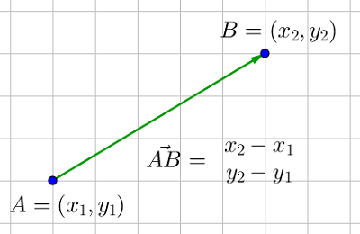
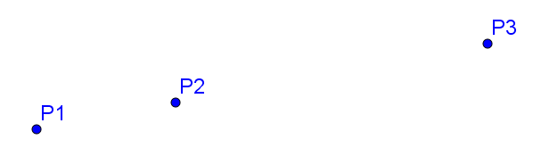

Vektorregning¶
Creative Commons BY-SA : bitjungle (Rune Mathisen) og fuzzbin (Tom Jarle Christiansen)

I fysikk- og kjemiberegninger jobber vi ofte med parametre som har både en størrelse og en bestemt retning. Det kan for eksempel være et legeme som faller mot bakken med en konstant akselerasjon. Når vi jobber med slike parametre, kan vi bruke vektorregning. Det kan også være nyttig å jobbe med vektorer i geometriske problemer. Her skal vi se på et slikt eksempel.
Denne siden dekker helt eller delvis kompetansemålene: Matematiske metoder 1
Noen ganger kan det være nyttig å la en datamaskin regne på ting som kan være vanskelig å avgjøre med det blotte øye. Et slikt eksempel kan være å sjekke om tre vilkårlige punkter i et koordinatsystem ligger på en rett linje. Vi skal løse et slikt problem med vektorregning.

Lese inn data¶
Det første vi gjør er å lage kode der brukeren kan taste inn tre vilkårlige punkter på formen \(x \ y\).
# Importerer biblioteker som skal brukes
import numpy as np
import matplotlib.pyplot as plt
# Leser inn tre punkter og konverterer til liste.
P1 = list(map(int, input("Tast inn punkt P1 pa formen <x y>:").split()))
P2 = list(map(int, input("Tast inn punkt P2 pa formen <x y>:").split()))
P3 = list(map(int, input("Tast inn punkt P3 pa formen <x y>:").split()))
---------------------------------------------------------------------------
StdinNotImplementedError Traceback (most recent call last)
<ipython-input-1-4b4956ed592d> in <module>
4
5 # Leser inn tre punkter og konverterer til liste.
----> 6 P1 = list(map(int, input("Tast inn punkt P1 pa formen <x y>:").split()))
7 P2 = list(map(int, input("Tast inn punkt P2 pa formen <x y>:").split()))
8 P3 = list(map(int, input("Tast inn punkt P3 pa formen <x y>:").split()))
/Library/Frameworks/Python.framework/Versions/3.8/lib/python3.8/site-packages/ipykernel/kernelbase.py in raw_input(self, prompt)
855 """
856 if not self._allow_stdin:
--> 857 raise StdinNotImplementedError(
858 "raw_input was called, but this frontend does not support input requests."
859 )
StdinNotImplementedError: raw_input was called, but this frontend does not support input requests.
Beregning¶
Vi må nå gjøre noen beregninger. Det enkleste er å bruke vektorregning. Vi lar \( \overrightarrow{v_1} \) være vektoren mellom \(P1\) og \(P3\). Så lar vi \(\overrightarrow{v_2} \) være vektoren mellom \(P1\) og \(P2\).
Hvis \(\overrightarrow{v_1} \times \overrightarrow{v_2} = 0 \) kan vi si at \(P1\), \(P2\) og \(P3\) ligger på en rett linje. Animasjonen nedenfor viser kryssproduktet til to vektorer når vi roterer den ene vektoren. Legg merke til at kryssproduktet blir 0 i to tilfeller.

Nå kan vi lage en funksjon som tar våre tre punker som innparameter, og returnerer True (ligger på samme linje) eller False (ligger ikke på samme linje).
def ligger_pa_linje(punkt1, punkt2, punkt3):
# Avgjør om punktene ligger på en rett linje. Returnerer True/False
# Lager to vektorer av punktene P1, P2 og P3
v_1 = np.array(punkt3) - np.array(punkt1)
v_2 = np.array(punkt2) - np.array(punkt1)
print("Vi lager vektorene {} og {} basert på ".format(v_1, v_2))
# Sjekker om kryssporduktet er null
if np.cross(v_1, v_2) == 0:
return True
else:
return False
Utskrift og resultat¶
Da gjenstår det bare å lage hovedprogrammet, med informativ tekst og utskrift.
# Hovedfunksjonen - Skriver ut svar og plotter punktene
if ligger_pa_linje(P1, P2, P3):
print("punktene {}, {} og {}, og de ligger pa en rett linje".format(P1, P2, P3))
else:
print("punktene {}, {} og {}, og de ligger ikke pa en rett linje".format(P1, P2, P3))
# Skriver ut punktene i et koordinatsystem
plt.plot([P1[0], P2[0], P3[0]], [P1[1], P2[1], P3[1]], 'bo')
plt.ylabel('Y')
plt.xlabel('X')
plt.show()
print("=== Have a nice day! ===")
Vi lager vektorene [4 4] og [2 2] basert på
punktene [1, 1], [3, 3] og [5, 5], og de ligger pa en rett linje
=== Have a nice day! ===
Oppgaver¶
Lag et program som regner ut arealet av en trekant avgrenset av tre punkter.
Lag et program som avgjør om tre punkter danner en rettvinklet trekant.
Lag et program som regner ut volumet av en pyramide med trekantet grunnflate og er avgrenset av fire punkter.